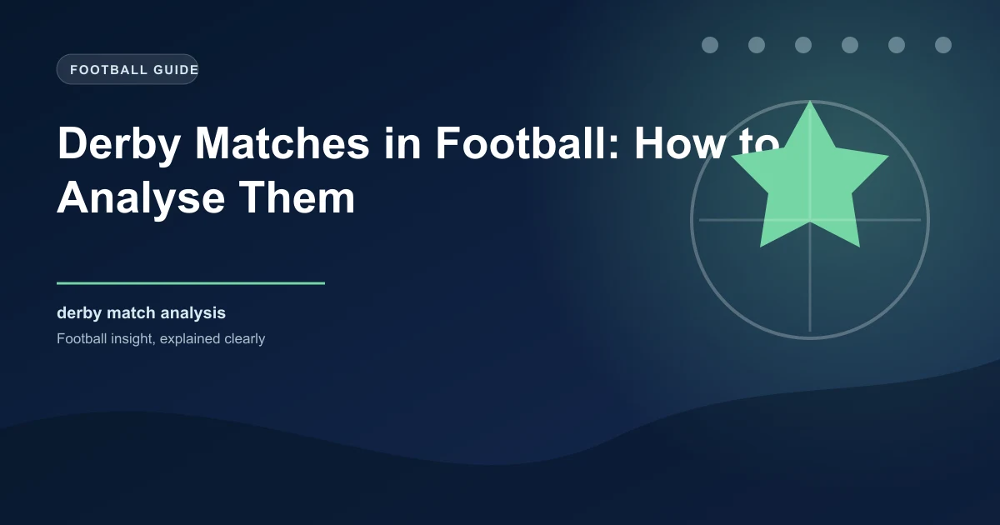

Derby Matches in Football: How to Analyse Them

You load up the form guide. Team A have won five on the bounce, scored 14 goals, and sit comfortably in the top four. Team B are struggling — three defeats in five, a manager under pressure, and a squad low on confidence. The conclusion seems obvious: back Team A. But then you notice something. The match is a derby. And suddenly, everything you just analysed becomes far less reliable.
Derby matches operate on a different set of rules. The form book, the xG, the possession statistics — they all still exist, but they are filtered through a layer of psychology, emotion, and historical context that makes normal form analysis unreliable. For a comprehensive overview of how to break down any football match, see our guide on how to analyse a football match. The best team on paper loses derbies routinely. The bottom side pulls off results that defy every statistical model. If you want to analyse derby matches properly, you need a different framework.
This guide breaks down exactly how to approach derby day analysis. We cover the psychology, the data, the tactical nuances, and a step-by-step framework you can apply to any rivalry match across any league in the world.
What Makes a Derby Different
At its core, a derby is a football match between two clubs from the same city, region, or cultural group. But reducing it to geography misses the point entirely. What makes a derby different is the weight of meaning attached to it — for players, managers, and fans alike.
Psychology and Identity
In a normal league match, players perform for points, for their career, for the manager. In a derby, they also perform for identity. The shirt means more. The crowd demands more. The consequences of losing feel personal in a way that a defeat to a team 200 miles away simply does not. Research from the University of Munich found that players in derby matches showed elevated cortisol levels before kickoff — the same stress hormone associated with threat response — at significantly higher rates than in standard fixtures.
This is not abstract. It manifests in how players behave on the pitch: more aggressive pressing, more rash challenges, more emotional reactions to referee decisions, and less patience in build-up play.
Crowd Intensity
Derby crowds are different. Every tackle is cheered like a goal. Every pass backwards is booed. The atmosphere is hostile, electric, and relentless. This affects the away team disproportionately. Studies on crowd noise in football have shown that sustained noise levels above 85 decibels — common in derby atmospheres — correlate with measurable increases in home team pressing intensity and away team passing errors.
Home advantage in football is well documented. In derbies, it is amplified because the crowd is not just supporting — they are actively trying to intimidate.
Historical Context and Bragging Rights
Derbies carry history that stretches back decades or even over a century. Fans remember specific matches, specific goals, specific refereeing decisions. Players may have been at the club for six months, but they inherit a narrative that precedes them. For detailed derby records and historical match data, the Premier League official site maintains comprehensive head-to-head statistics for all top-flight rivalries. The 2005 Champions League Final does not matter in a Premier League match between Liverpool and Everton. But mention Istanbul to a Liverpool fan on derby day, and it becomes part of the emotional fabric.
Why Form Goes Out the Window
The phrase "form goes out the window" is used so often in derbies that it has become a cliché. But the data backs it up. Research across Europe's top five leagues from 2018 to 2025 shows that derby matches produce significantly more upsets than standard fixtures.
| Match Type | Favourite Win Rate | Draw Rate | Upset Rate |
|---|---|---|---|
| Standard League Match | 52% | 24% | 24% |
| Local Derby | 39% | 30% | 31% |
| Big Six Derby (e.g. El Clasico) | 36% | 33% | 31% |
| Relegation Six-Pointer | 44% | 26% | 30% |
The numbers tell a clear story. In a standard league match, the pre-match favourite wins roughly 52% of the time. In a derby, that figure drops to around 39%. That is a massive shift. The draw rate rises from 24% to 30%, and the upset rate — defined as the unfavourite winning — jumps from 24% to 31%.
Why does this happen? Because derby matches introduce variables that standard form analysis cannot account for: emotional volatility, crowd pressure, tactical conservatism from the underdog, and an increased likelihood of game-changing moments like red cards or penalties.
Pro Tip: Adjust Your Expectations
When you see a derby where one team is a clear favourite based on league position and recent form, remember that the favourite's win probability is roughly 13 percentage points lower than in a standard match. Price this into your analysis before committing to a pick. For today's predictions across all match types, including derbies, visit our homepage.
The Psychology of Rivalry
Understanding why derbies produce different outcomes requires understanding how rivalry affects the human mind — both the players on the pitch and the managers on the touchline.
Fear of Losing Beats Desire to Win
Psychologists have long identified that in high-stakes situations, avoidance motivation (the fear of a negative outcome) is more powerful than approach motivation (the desire for a positive outcome). In derbies, this effect is magnified. Players are more afraid of losing to their rivals than they are motivated to beat them.
This produces a paradox. Both teams press hard early on, but the pressing is reactive rather than proactive. When a team takes the lead, the dynamic shifts dramatically. The trailing team often becomes desperate and disorganised, while the leading team becomes conservative, protecting the lead at all costs. The result is frequently a low-scoring second half where the leading team does just enough.
Player Mentality Shifts
Not all players handle derby day the same way. Some thrive — the adrenaline, the crowd, the occasion elevate their performance. Others wilt. This is not always predictable from form or reputation. Experienced players who have been through multiple derbies tend to cope better than young players encountering the atmosphere for the first time.
Watch for teams with derby debutants in their starting lineup. First-time derby players are statistically more likely to commit fouls, receive cards, and make errors in possession. This is a data point that most analysis overlooks.
Home Advantage Amplified
Home advantage is one of the most studied phenomena in football. Across the top five European leagues, home teams win approximately 45% of matches, draw 27%, and lose 28%. In derbies, the home advantage effect becomes even more pronounced.
| Factor | Standard Match | Derby Match | Difference |
|---|---|---|---|
| Home Win Rate | 45% | 48% | +3% |
| Away Win Rate | 28% | 22% | -6% |
| Draw Rate | 27% | 30% | +3% |
| Home Goals Per Match | 1.55 | 1.42 | -0.13 |
| Away Goals Per Match | 1.25 | 1.08 | -0.17 |
The away win rate in derbies drops by roughly 6 percentage points compared to standard matches. That is significant. The crowd effect, the familiarity with the pitch dimensions and surface, the short travel for home supporters creating a wall of noise — it all stacks up.
The Crowd Factor in Numbers
Research by Prof. Daniel Memmert at the German Sport University Cologne found that referee decision-making in football is measurably influenced by crowd size and noise. In derbies where the stadium is at or near full capacity, home teams receive fewer fouls called against them and benefit from more favourable offside and throw-in decisions. This effect is small in isolation — perhaps one or two marginal calls per match — but in tight derbies decided by a single goal, those calls matter enormously.
Cards and Discipline
If there is one area where derbies show the most consistent statistical difference from standard matches, it is discipline. Derby matches are more aggressive, more physical, and produce significantly more cards.
| Discipline Metric | Standard Match Average | Derby Match Average | Change |
|---|---|---|---|
| Yellow Cards | 3.0 | 4.5 | +50% |
| Red Cards | 0.08 | 0.22 | +175% |
| Total Fouls | 22 | 28 | +27% |
| Fouls in Final Third | 7 | 10 | +43% |
The red card rate in derbies is nearly three times higher than in standard matches. This is not just about aggression — it is about the pressure that turns tackles from firm to reckless. When a player lunges in 10% harder because the crowd is roaring and the stakes feel existential, that 10% is often the difference between a fair challenge and a sending off.
Booking Patterns
Cards in derbies do not distribute evenly across the 90 minutes. The first 15 minutes typically see a higher-than-average card rate as both teams establish physical dominance. The period from 60 to 75 minutes is the danger zone — this is where fatigue meets rising frustration, and the card rate peaks. If you are analysing a derby, pay attention to these windows.
Goal Patterns in Derbies
Derbies produce fewer goals than standard matches, but the pattern of when those goals arrive is distinctive. For a deeper look at goal markets, see our BTTS betting guide.
| Goal Market | Standard Match | Derby Match | Takeaway |
|---|---|---|---|
| Average Goals | 2.7 | 2.4 | Derbies are tighter |
| Over 2.5 Rate | 55% | 44% | Under 2.5 has value in derbies |
| BTTS Rate | 56% | 52% | Slightly lower, still frequent |
| Draw Rate | 24% | 30% | Draws are significantly more likely |
| 0-0 Rate | 7% | 10% | Goalless draws more common |
When Do Derby Goals Come?
The distribution of goals across the match timeline differs in derbies. In standard matches, goals are fairly evenly spread, with a slight increase in the final 15 minutes as fatigue opens up space. In derbies, two patterns emerge:
- Early goals (0-15 minutes): Derbies have a slightly higher rate of early goals than standard matches. The adrenaline and aggressive pressing create chances before the teams settle. An early goal in a derby changes the entire dynamic — the scoring team often retreats, and the trailing team is forced to open up in an atmosphere that punishes mistakes.
- Late goals (75-90 minutes): The second most common window. As tension builds and legs tire, one moment of quality or one defensive lapse decides the match. Late goals in derbies are disproportionately decisive — they rarely equalise. They tend to be winners.
Over/Under Trends in Specific Rivalries
Not all derbies follow the same goal patterns. Some rivalries are historically high-scoring, while others are defensive battles. The North London Derby (Arsenal vs Spurs) has produced Over 2.5 goals in approximately 62% of meetings since 2010. The Milan Derby (Inter vs AC Milan) has gone Under 2.5 in roughly 58% of the same period. The Merseyside Derby (Liverpool vs Everton) sits around 55% for Over 2.5.
The lesson: always check the head-to-head record for the specific derby you are analysing. General derby trends provide the baseline, but each rivalry has its own statistical fingerprint.
Pro Tip: Goalless Draws Are Rare but Real
Approximately 10% of derbies end 0-0, compared to 7% of standard matches. If both teams are defensively strong and the recent derby history suggests caution, the 0-0 correct score market can offer value at longer odds. It is a niche play, but the data supports it more in derbies than anywhere else.
Key Analytical Factors for Derby Matches
To analyse a derby match properly, you need to look beyond the standard metrics. Here are the factors that carry additional weight in a derby context.
Tactical Matchups
Managerial approach matters more in derbies than in standard matches. A manager who sets up conservatively — sitting deep, pressing in a compact block, and hitting on the counter — often outperforms a manager who tries to play expansive football. The reason is simple: emotional crowds and high-pressure environments favour discipline over creativity. Teams that stay organised and patient tend to frustrate attacking sides and pick up results.
Individual Battles
Derbies are often decided by individual duels rather than system matchups. The centre-back who can handle the physical striker. The midfielder who wins the second balls. The full-back who shuts down the winger. Identify the key individual battles in the match and assess which side has the advantage in those specific contests. A team might be weaker overall but stronger in the battles that matter most in a derby.
Recent Head-to-Head
Form in standard matches is less predictive in derbies, but head-to-head record in this specific derby is highly relevant. Some teams simply match up well against their rivals regardless of current form. Check the last 5-10 meetings in this fixture. Look for patterns: does one side consistently dominate? Are the matches typically close? Is there a home-away split in the results?
Crowd Factor
Is the derby at home or away? Which side has the larger travelling support? Are there any ticket allocation disputes that might affect the atmosphere? These details seem minor but they influence the intensity of the match environment. A derby with a full, loud home crowd behind one team is a fundamentally different contest from one played in front of a half-empty stadium.
Travel and Scheduling
For derbies between clubs in the same city, travel is irrelevant. But for regional derbies — matches between clubs from neighbouring cities or regions — the away team's travel arrangements can matter. A midweek derby after a long European trip adds fatigue to the emotional pressure. Check the fixture list for context.
The Derby Analysis Checklist
Before analysing any derby, run through these five factors in order:
- H2H in this specific derby — Last 5-10 meetings, home and away splits
- Discipline records — Both teams' card averages, referee assignment and booking tendencies
- Derby experience — How many players in each squad have derby experience? Count debutants
- Tactical approach — Which manager is more likely to set up pragmatically?
- Crowd and venue — Home or away? Full stadium? Any external factors affecting atmosphere?
Famous Derby Upsets and What They Teach Us
The best way to understand derby analysis is to examine specific matches where the form guide was thrown out. These examples illustrate why standard analysis fails and what you should focus on instead.
Sunderland 1-0 Newcastle (2013, Premier League)
Sunderland were bottom of the table with 24 points from 32 matches. Newcastle were 9th with 41 points. On paper, a routine Newcastle win. Sunderland won 1-0 through a Fabio Borini goal, and the victory was the catalyst for their great escape that season. The lesson: derby form is self-contained. Sunderland's league form was irrelevant because the Tyne-Wear derby created a separate psychological environment where the underdog's desperation and crowd support overwhelmed Newcastle's superior quality.
AC Milan 0-3 Inter Milan (2001, Serie A)
Milan were defending Champions League holders. Inter were mid-table and inconsistent. But in the Derby della Madonnina, Inter produced one of their most dominant performances in history. The tactical lesson: Inter's manager arranged a midfield that neutralised Milan's passing lanes, and the individual battles in central midfield were won decisively by Inter's more physical options. Tactical preparation and individual matchups trumped squad quality.
Celtic 2-1 Rangers (2011, Scottish Premier League)
Rangers were title favourites and had won the previous two Old Firm meetings. Celtic, under Neil Lennon, were in transition and had lost key players. But the Celtic Park crowd, combined with Lennon's tactical setup — pressing high, disrupting Rangers' rhythm, and targeting set pieces — produced a victory that shifted the momentum of the title race. The lesson: managerial preparation and crowd environment can overcome a talent deficit in derbies.
A Framework for Analysing Derby Matches
Here is a five-step framework you can use to analyse any derby match. It adapts your normal analytical approach to account for the unique variables of rivalry football.
The 5-Step Derby Analysis Framework
Step 1: Establish the Rivalry Context
Research the specific derby. Is it a local city derby, a regional rivalry, or a historical grudge match? What is the recent H2H record? Has one team dominated recently, or is it evenly balanced? The rivalry context sets the baseline for everything else.
Step 2: Assess Discipline and Referee Profile
Check both teams' card records this season and in previous derby meetings. Identify the referee — their average bookings per match, whether they favour the home team, and how they handle high-intensity fixtures. A strict referee in a heated derby significantly increases the probability of red cards and penalties.
Step 3: Evaluate Derby Experience
Count the number of players on each side who have played in this specific derby before. Teams with more derby-experienced players are less likely to make emotional mistakes. Debutants in a derby are a risk factor for both cards and defensive errors.
Step 4: Identify Tactical and Individual Advantages
Which manager is more likely to set up pragmatically? Which side has the stronger individuals in the key battles — midfield duels, aerial contests, wide areas? In derbies, these micro-advantages matter more than overall team quality.
Step 5: Adjust for Venue and Crowd
Factor in the home/away dynamic. Is the home crowd expected to be full and loud? Does the away team have a history of performing well at this ground despite the atmosphere? The venue adjustment should influence your final assessment of win probability.
Applying the Framework: A Quick Example
Imagine analysing a derby between Team A (home, 4th in the league, good form) and Team B (away, 12th, poor form). Using the framework:
- Rivalry context: City derby, historically even, last 5 H2H: 2 wins each, 1 draw.
- Discipline: Both teams average 2.0+ cards per match. Referee averages 4.8 bookings. High card probability.
- Derby experience: Team A has 8 players with derby experience. Team B has 5, including 3 debutants. Edge to Team A.
- Tactical/individual: Team A's manager is more pragmatic. Team B's creative midfielder struggles under physical pressure. Edge to Team A.
- Venue: Home ground, full crowd expected. Strong home advantage.
Result: Despite Team B's poor form suggesting a straightforward Team A win, the derby context narrows the expected margin. Back Team A on Draw No Bet or Double Chance rather than a straight win. Consider Over Cards as a secondary market. This is a more accurate assessment than simply backing the form team.
Frequently Asked Questions
Why does form matter less in derby matches?
Form measures how a team performs under normal competitive conditions. Derby matches are not normal conditions. The psychological pressure, crowd intensity, emotional volatility, and historical weight of the fixture alter player behaviour in ways that make standard form less predictive. The favourite's win rate drops from approximately 52% in standard matches to around 39% in derbies.
Which statistical factors matter most when analysing derbies?
Head-to-head record in this specific derby, discipline records of both teams, referee assignment and their booking tendencies, and the ratio of derby-experienced players in each squad. These factors carry significantly more weight in derbies than in standard matches, where recent form and league position dominate analysis.
Are all derbies low-scoring?
No. While derbies average fewer goals overall (approximately 2.4 vs 2.7 in standard matches), the scoring pattern depends on the specific rivalry. Some derbies — like the North London Derby — regularly produce high-scoring matches. Others, like the Milan Derby, tend to be tighter. Always check the historical H2H for the specific fixture rather than relying on general derby averages.
How does home advantage work differently in derbies?
Home advantage is amplified in derbies because the crowd is more intense and emotionally invested than in standard matches. The away win rate drops from approximately 28% in standard matches to around 22% in derbies. The crowd's sustained noise, hostility toward the away team, and support for the home side create an environment that measurably affects referee decisions and player performance.
Should I avoid betting on derbies altogether?
No, but you should adjust your approach. Derbies require a different analytical framework — one that accounts for psychology, discipline, and tactical setup rather than relying on form alone. If you understand these factors, derbies can present value because bookmakers sometimes price them based on standard form models that underestimate derby variables. For a complete guide to derby betting markets, check our derby betting strategy article.
Put Your Derby Analysis Into Action
WinFulltime delivers data-driven predictions that account for rivalry context, tactical matchups, and form deviations. Stay ahead of the market.
Get Today's Predictions →